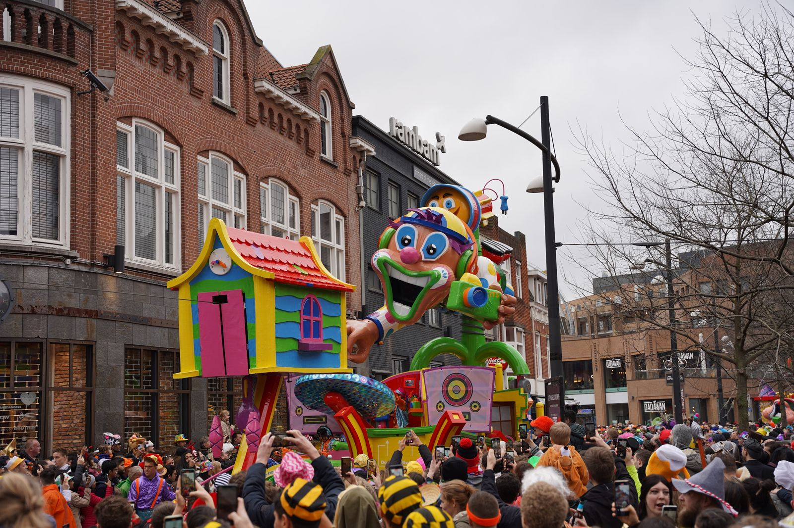

Reference photograph (Pexels, Eren Alkış) — a Dutch carnival street, shown for the kind of route involved. It is not the Cádiz parade.
Carnaval de Cádiz 2026 — the full river
The brief
Eleven blocks — three bands, two comparsas, a 230-metre samba school, two floats and a children's group — down the 2,400 m Alameda route, inside a 105-minute closure (17:00–18:45), past two ambulance crossings that had to stay open at all times. The year before, the tail had cleared 20 minutes after the closure ended.
The decisions
The samba school went fifth, not last: at 230 m it is a river of its own, and anything behind it inherits its pace. Gaps were set at the printed 15 m standard, raised to 20 m before both crossings so a compressing parade could never seal them. Pace was fixed at the comparsa rate of 40 m/min — the slowest block sets the river's speed, so the sheet said so.
The outcome
Parade length 1,320 m; pass time at the cathedral steps 33.0 minutes; step-off 17:00, tail clear 18:33 — twelve minutes of closure to spare. The association chair's words are on the home page, attached to this file, where testimonials belong.
The running order, as printed for the marshals
| # | Block | Length | Gap after | Head at cathedral steps |
|---|---|---|---|---|
| 1 | Opening brass band | 60 m | 15 m | 28.8 min |
| 2 | Percussion comparsa | 85 m | 15 m | 30.6 min |
| 3 | Folk dance group | 150 m | 20 m · crossing | 33.1 min |
| 4 | Main float | 45 m | 15 m | 37.3 min |
| 5 | Samba school | 230 m | 15 m | 38.8 min |
| 6 | Wind band | 70 m | 15 m | 44.9 min |
| 7 | Costume comparsa | 130 m | 15 m | 47.0 min |
| 8 | Children's group | 95 m | 20 m · crossing | 50.6 min |
| 9 | Light float | 40 m | 15 m | 53.5 min |
| 10 | Youth band | 110 m | 15 m | 54.9 min |
| 11 | Closing comparsa | 145 m | — | 58.0 min |
Blocks total 1,160 m + gaps 160 m = 1,320 m. At 40 m/min: (2,400 + 1,320) ÷ 40 = 93.0 minutes, step-off to tail clear. The gap reasoning is the design: the two 20 m gaps sit exactly where the ambulances cross.